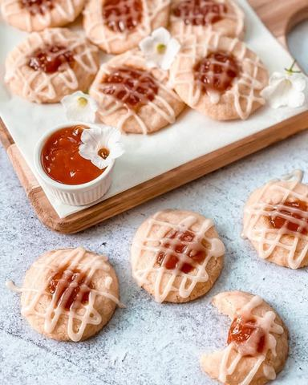

Moja beleška
SačuvanoMiris i ukus ovih keksića vraća u detinjstvo ☺️ Ono jednostavno, mekano, puterasto testo koje se topi u ustima i džem od kajsije 🥰Jednostavno, a tako prelepo.. Jedan zalogaj i uploviš u neke davne prelepe uspomene. Ono kad mama napravi keksiće a dvorište se preplovi drugarima iz ulice, pa se čuje samo smeh i graja i traži koji keksić više.. 💫 Kada smo kod detinjstva i džema onaj koji mene najviše asocira na taj period je upravo džem od kajsije koji tako lepo ide i uz naš omiljeni rolat i u čuvenu maminu Bela rada tortu ☺️🥰 Za keksiće će vam biti potrebno samo par osnovnih sastojaka, a ukus ćete pamtiti, obećavam 🥰
Sastojci
- Sastojci
- Možete ih malo i prošarati kada se prohlade
Priprema
Promešajte brašno, gustin i malčice soli pa ostavite posudu sa strane. Puter sobne temperature umutiti sa šećerom, pa tome dodati kašičicu arome vanile, te postepeno dodavati brašno muteći. Dobićete jako mekanu puterastu smesu koju je potrebno da zamotate u providnu foliju i ostavite u frižider da se lepo ohladi nekih sat vremena. Od smese formirajte malene kuglice pa svaku udubite po sredini i tu stavite džem. Pravite razmak izmedju kuglica u plehu jer će se pečenjem širiti. Dovoljno je da se peku 10-11 minuta na 175C ili samo dok ivice keksića ne krenu da dobijaju malčice tamniju boju. Ostavite ih na plehu da se prohlade, pa ih možete malo i prošarati smesom koju samo sjedinite, umutite i sipate u poslastičarsku kesu kojoj ste malčice zasekli vrh. Nadam se da ću još nekoga vratiti u detinjstvo ☺️
Originalni opis sa Instagrama
Keksići sa džemom od kajsija 🍪🍯 Miris i ukus ovih keksića vraća u detinjstvo ☺️ Ono jednostavno, mekano, puterasto testo koje se topi u ustima i džem od kajsije 🥰Jednostavno, a tako prelepo.. Jedan zalogaj i uploviš u neke davne prelepe uspomene. Ono kad mama napravi keksiće a dvorište se preplovi drugarima iz ulice, pa se čuje samo smeh i graja i traži koji keksić više.. 💫 Kada smo kod detinjstva i džema onaj koji mene najviše asocira na taj period je upravo džem od kajsije koji tako lepo ide i uz naš omiljeni rolat i u čuvenu maminu Bela rada tortu ☺️🥰 Za keksiće će vam biti potrebno samo par osnovnih sastojaka, a ukus ćete pamtiti, obećavam 🥰 Sastojci: •250 gr brašna •2 kašičice gustina •prhosvat soli •220 gr putera sobne temperature •100 gr šećera •kašičica ekstrakta vanile •džem od kajsije @ukusiprirode.rs Možete ih malo i prošarati kada se prohlade: •50 gr šećera u prahu •2-3 kašičice vode •1 kašičica ekstrakta vanile Promešajte brašno, gustin i malčice soli pa ostavite posudu sa strane. Puter sobne temperature umutiti sa šećerom, pa tome dodati kašičicu arome vanile, te postepeno dodavati brašno muteći. Dobićete jako mekanu puterastu smesu koju je potrebno da zamotate u providnu foliju i ostavite u frižider da se lepo ohladi nekih sat vremena. Od smese formirajte malene kuglice pa svaku udubite po sredini i tu stavite džem. Pravite razmak izmedju kuglica u plehu jer će se pečenjem širiti. Dovoljno je da se peku 10-11 minuta na 175C ili samo dok ivice keksića ne krenu da dobijaju malčice tamniju boju. Ostavite ih na plehu da se prohlade, pa ih možete malo i prošarati smesom koju samo sjedinite, umutite i sipate u poslastičarsku kesu kojoj ste malčice zasekli vrh. Nadam se da ću još nekoga vratiti u detinjstvo ☺️ • • • #keksici #puterkeksici #ukusdetinjstva #mojirecepti #slatkisi #dezert #idejezadezert #zadovoljnahr #dzemodkajsija #kajsija #kajsijakolač #banini #cookies #cookie #cookiedecorating #cookierecipe #sweets #apricotcookies #dessert #myreceipe #ideasfordessert